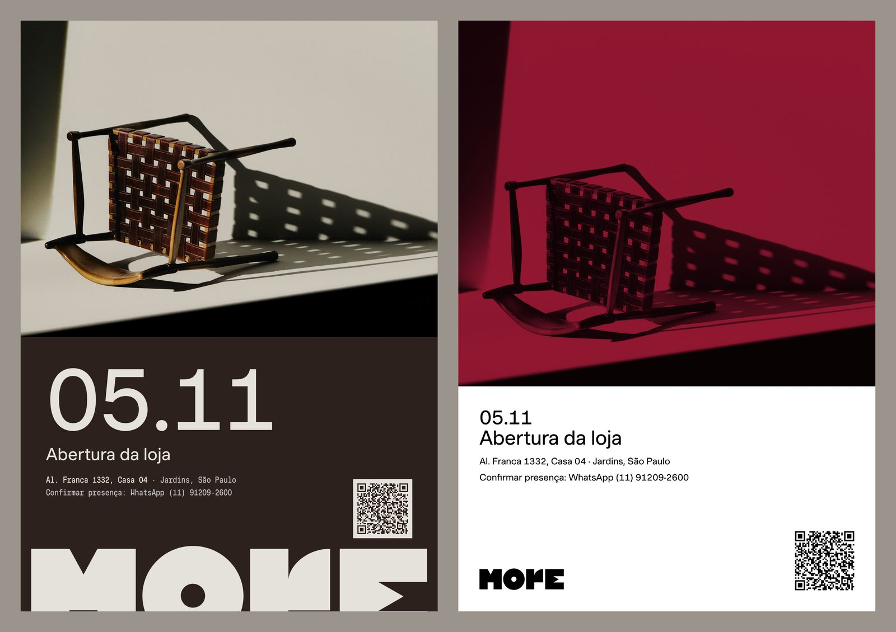

A loja abre em 05.11.
Alameda Franca 1332, casa 04 · Jardins · São Paulo
A loja é onde o tempo fica. A madeira escurece, o latão ganha pátina. Não retocamos nada disso. Aqui está tudo o que sai para a abertura: sequência, convite, vitrine, livro, etiquetas e lista. Nada é final. A More escolhe.
O kit, peça por peça
Tudo parte do que a More já tem. As cores, a Muoto, os nomes das peças e as fotos de estúdio. Nada é aleatório. Cada cor, medida e palavra é uma decisão.
Uma voz, do aviso ao obrigado
Cinco peças, de 20.10 a 06.11. Cada uma em story, post e WhatsApp. Três stories em vídeo, com corte seco.
Sai 25 arquivos prontos para subir
[Ver 02]Três convites, uma escolha
Sem elipse, com a elipse laranja do convite atual e pelo guia de uso. Os três estão prontos. A More escolhe.
Sai duas versões em três formatos, uma em A5
[Ver 03]Pronto para a gráfica
O A5 sai com sangria de 3 mm e caixas de corte no PDF. O que falta confirmar com a gráfica está escrito abaixo.
Sai PNG a 300 dpi e PDF com sangria
[Ver 04]A vitrine na medida do vão
A marca em XL e a barra preta sobre o vidro. Atrás, a receita de ambiente. Com a medida real, a peça se refaz em escala.
Sai duas fases, PDF em 1:10
[Ver 04]O livro antes da capa
Formato, papel, cadernos, lombada e a sequência das 24 peças. Onde falta texto, está marcado em vermelho. Não inventamos.
Sai flatplan A3, capa, verso e lombada em duas cores
[Ver 05]O livro numa foto real
O livro é um objeto 3D com as medidas reais. Ele entra na foto do Sofá Canoa. Nenhuma foto foi alterada. Nenhum ambiente foi gerado.
Sai render em Jambo e em Amarelo, com detalhe
[Ver 05]Etiquetas a partir do site
Cada peça ganha um QR para a página dela no site. Ficha A6 e etiqueta de pendurar. O que o site não tem, a etiqueta pede para confirmar.
Sai 24 QR, 8 etiquetas, 2 facas, 1 lista A4
[Ver 06]A loja em 3D
O salão da Alameda Franca, desenhado pela planta. Cada peça exposta abre de perto. É um lugar para conversar.
Sai 24 peças no lugar da abertura
[Ver a loja]Modelos que o time edita
Cada peça tem um modelo com as cores e a tipografia da More. O texto muda num lugar só. A peça sai de novo em todos os formatos.
Sai 6 modelos e uma planilha de links
[Ver 08]- O tempo fica. Foto de peça não se retoca. Pátina e madeira escura são parte dela.
- A luz da hora. Uma luz dura, uma sombra de janela. A foto do dia mostra a luz daquele dia.
- Cheio e vazio. Foto inteira, detalhe e respiro, nessa ordem.
- A conversa começa por pergunta. Para qual sala é? Que luz ela tem?
- A versão do convite e a cor da capa do livro.
- Gráfica, papel, Pantone e tiragem.
- Os textos das 9 peças sem linha seca. Não escrevemos nenhum por conta.
Cronograma, de trás para frente
O impresso vai para a gráfica por volta de 22.10. O que não couber nesse prazo sai no digital. Até a gráfica ser escolhida, vale o sistema. Sangria de 3 mm, segurança de 5 mm, papel não revestido. Cores a confirmar com a gráfica.
| Quando | Peça | Canal | Depende de |
|---|---|---|---|
| 17.10 | Escolha da More nesta página | — | Versão do convite e cor da capa |
| 20.10 | Aviso de data | Instagram story e feed, WhatsApp | nada |
| 22.10 | Convite A5, etiquetas, vitrine | Gráfica | Gráfica, papel, licença da Muoto, prova a 100% |
| 28.10 | Convite | WhatsApp, e-mail, Instagram | Lista de convidados e canal de confirmação |
| 04.11 | Véspera | Instagram story, WhatsApp | nada |
| 05.11 | Story do dia | Instagram, pelo Vitor | A foto do dia, feita pelo Vitor |
| 06.11 | Agradecimento | Instagram, WhatsApp | Uma foto da abertura |
| depois de 05.11 | Livro | Gráfica | Fotos originais, textos das 9 peças sem linha, tiragem |
A sequência de 05.11
Cinco peças, uma foto, uma voz. A data em Muoto, o endereço em mono no rodapé. A marca em XL, sangrada embaixo. No dia e no obrigado, a foto de estúdio só guarda o lugar. O Vitor troca pela foto do dia, com a luz daquela hora.
Aviso de data


Convite


Véspera


Dia. A foto é do Vitor.


Agradecimento


Convite: três versões
À esquerda, o convite sem elipse. À direita, com a elipse laranja do convite atual. Os dois estão prontos nos três formatos. A More escolhe.
Abaixo, a terceira versão em A5, feita pelo guia de uso da More. Logo oficial com 30 mm, preto puro sobre branco. Pantone 206 C sobre a foto da campanha em preto e branco. Margem de 5%, título de 20 pt, texto de 12 pt. Só Muoto Regular, como o guia pede. A folha mostra o convite atual e esta versão lado a lado.



Convite impresso e vitrine
O A5 sai em dois arquivos. A prova no formato final, a 300 dpi. O PDF da gráfica, com sangria de 3 mm e caixas de corte. A vitrine é vinil preto recortado sobre o vidro. A marca em XL e a barra preta. Atrás do vidro, a receita de ambiente.


Formato final 148 × 210 mm · sangria 3 mm · segurança 5 mm
Cartão natural não revestido, 250 a 300 g
Preto rico nas áreas grandes. Valor CMYK a confirmar com a gráfica
O off-white é o papel. Não imprime
PDF em RGB com as caixas de corte. A gráfica converte para PDF/X-4
Muoto e Muoto Mono: confirmar com a 205TF o uso em impresso. Sem fonte substituta
Foto da Cadeira Maria em 1.440 px. Serve para o A5, não para cartaz


Vinil preto fosco recortado. Pantone a confirmar
Marca XL a 95% do vão, base encostada na barra
Barra preta de 120 mm com o texto em mono
A silhueta de 1,70 m na prévia só dá a escala
Com a medida real do vão, a peça sai de novo em escala
Atrás do vidro, a receita de ambiente
Uma peça escultórica e uma peça funcional
Uma textura feita à mão, uma planta, uma obra
Um achado com pátina. O tempo fica
Cheio e vazio. Entre as peças, chão livre
De dia, a luz da rua. À noite, a luz da loja
Livro: Menos do mesmo, Edição 01
O objeto antes da capa. 230 × 300 mm, 112 páginas em 7 cadernos. Brochura costurada, lombada de 12 mm, miolo em papel não revestido 150 g. As 24 peças em sequência, com as linhas secas das legendas do Instagram. Cada peça tem a foto inteira, depois o detalhe e a ficha. A capa é Vermelho Jambo. Amarelo Igaratá fica como alternativa.


Etiquetas e lista das peças
Dois formatos do mesmo modelo. A ficha A6 e a etiqueta de pendurar de 50 × 90 mm. Furo, sangria e segurança na faca. Nome, material, medida e prazo. Nenhum elogio.


Cartão não revestido 300 g para as etiquetas; 120 a 150 g para a lista
Preço da TOM.01 e da Estante Dominó: a confirmar. A etiqueta imprime o aviso
Medidas da Estante Dominó: a confirmar. A etiqueta imprime o aviso
Pronta entrega: TOM.01 e Luminária Ngoni. Conferir com o time
As outras peças: Sob encomenda · ~120 dias
Fotos da lista em 1.200 px. Servem para A4 em casa
Antes de imprimir
O que prova a peça não é esta página. É o celular, a impressora e a mão.
- Cada QR leva à página da peça no site, marcado por peça e canal.
- Cores, tipos, nomes e medidas seguem as regras do sistema da More.
- As linhas secas são as do Instagram da More. Nenhuma foi inventada.
- A etiqueta da Estante Dominó foi feita só com o modelo, em menos de um minuto.
- Mandar o PNG do convite num WhatsApp real. A data e o endereço se leem depois da compressão? O QR não vale no WhatsApp. O link vai junto, em texto.
- Imprimir o A5 em casa a 100%, sem ajustar à página. Ler o QR a 1 m. Se não ler, o QR cresce para 24 mm.
- Pendurar uma etiqueta 50 × 90 numa peça. O furo de 5 mm segura no barbante? O nome se lê a 1 m?
- Ver o campo Jambo no monitor e no papel. O mais perto do veludo jambo da Cadeira Maria vira o Pantone.
Modelos e o que falta
Cada peça tem um modelo. O texto muda num lugar só, e a peça sai de novo em todos os formatos. O que falta vem da More.
- Fotos originais a 300 dpi para a capa do livro, o cartaz e a vitrine.
- Licença da Muoto e da Muoto Mono (205TF) para o impresso.
- Gráfica, papel e tiragem. Prova de cor do Jambo e do preto rico.
- Lista de convidados e canal de confirmação. Hoje o convite leva o WhatsApp do site.
- Preços, medidas e acabamentos da TOM.01 e da Estante Dominó.
- Textos das 9 peças sem linha seca no livro.
- Nome final da Estante Dominó e da Otoman Leticia.
- O livro impresso, fotografado na loja depois de 05.11.
- Não alteramos foto de peça. Não geramos ambiente. O livro entra numa foto real.
- Não usamos fonte substituta no impresso. Sem licença da Muoto, a peça é refeita.
- Não escolhemos o convite nem a cor da capa. As versões estão prontas.